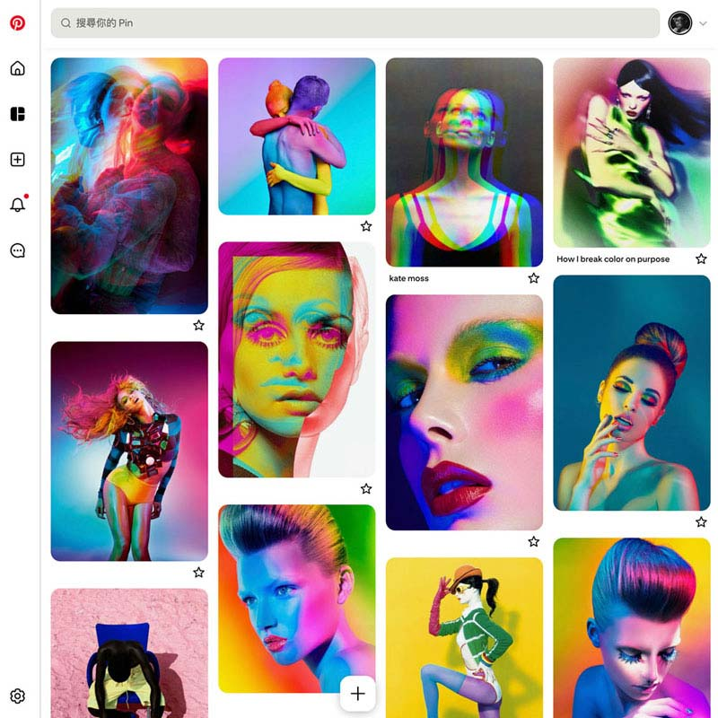
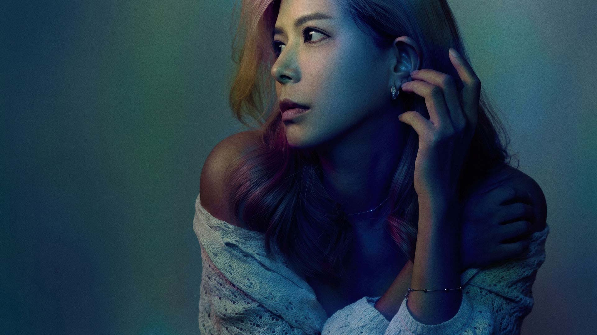
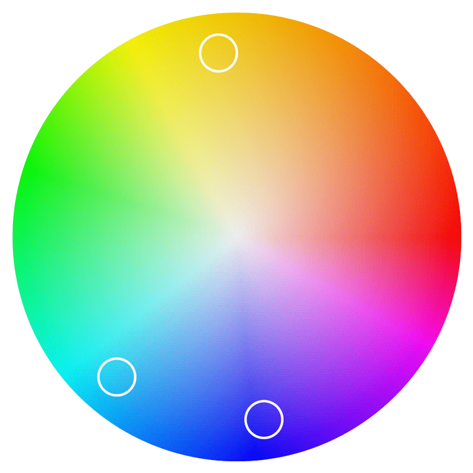
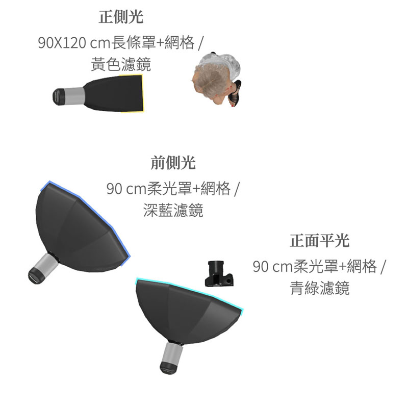
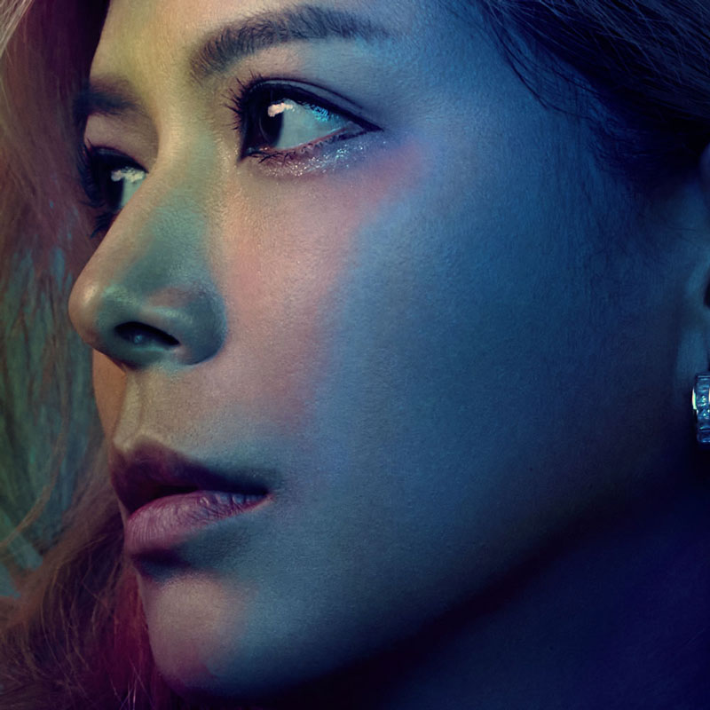

01

打撈靈感
我習慣使用Pinterest來搜集製作Mood Board，內容是不同色光形成的繽紛色彩風格。從中可以收斂出一個規則，要有繽紛的效果色相上要以RGBCMY各色比例相當，沒有某個顏色作為主角。

這張影像的概念發想來自極光，有陣子太陽磁暴特別強烈，在中高緯度的國家也看得到極光。我想嘗試把色彩作為主角，讓多種顏色的漸變作為人像攝影創作的形式，表現一種靜態影像的色彩在幽暗中浮動的氛圍。

我習慣使用Pinterest來搜集製作Mood Board，內容是不同色光形成的繽紛色彩風格。從中可以收斂出一個規則，要有繽紛的效果色相上要以RGBCMY各色比例相當，沒有某個顏色作為主角。

為了強調人物特徵，以側臉作為主要造形。使用Lowkey的調性來表現夜晚的氛圍。並設計黃到綠到藍的色相連續漸變來表現極光。要讓光線比較容易疊在畫面中而不受到其他顏色干擾。我設定背景與服裝為白色。

燈位設計上用正側光設定黃色作為主光，黃色的明度高，適合作為人物亮部，接者前側光設定深藍色打在中間調，明度最弱，最後是正面平光設定青綠色打在暗部明度中等。這樣由亮黃、中青、暗藍同時可以形成色彩與階調的漸變關係。

RGBWW顆粒的COB LED的顏色波長不是連續的，現場拍出來顏色會有點斷階，過渡不夠柔順。後製上我用PS的混合模式搭配筆刷手動疊色來補這個斷層。 課程重點不是複製視覺效果，而是學會這套從模糊念頭走到精準執行的判斷方式。
攝影: James
模特: 烏娜Una
場地: 333攝影棚B棚